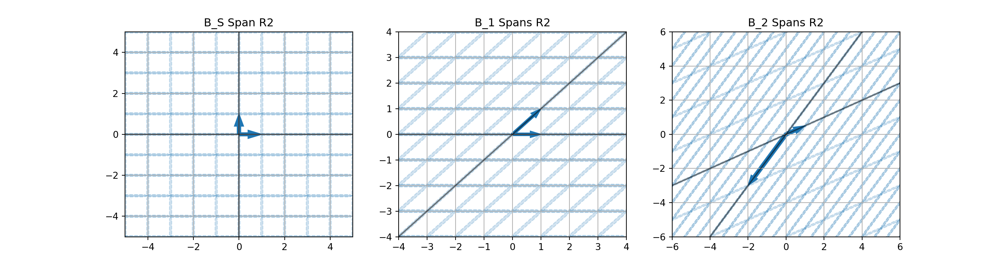

MAT 350: Bases and Coordinate Systems
August 12, 2025
Warm-Up Problems
Complete the following warm-up problems to re-familiarize yourself with concepts we’ll be leveraging today.
Determine whether the vectors \(\left\{\begin{bmatrix} 1\\ 0\\ 0\\ 0\end{bmatrix}, \begin{bmatrix} 1\\ 1\\ 0\\ 0\end{bmatrix}, \begin{bmatrix} 1\\ 1\\ -2\\ 1\end{bmatrix}, \begin{bmatrix} 0\\ 1\\ 0\\ 3\end{bmatrix}\right\}\) span \(\mathbb{R}^4\).
Does the collection \(\left\{\left[\begin{array}{r} 1\\ 0\\ 1\\ 1\end{array}\right], \left[\begin{array}{r} 0\\ 2\\ 0\\ 0\end{array}\right], \left[\begin{array}{r} 1\\ 0\\ 0\\ 1\end{array}\right]\right\}\) also span \(\mathbb{R}^4\).
How many vectors are required to span \(\mathbb{R}^n\)?
Consider the map below. Provide directions to get from the House to the Store.
Reminders and Today’s Goal
- A vector \(\vec{y}\) is a linear combination of a collection of vectors \(V = \left\{\vec{v_1},~\vec{v_2}~,\cdots,~\vec{v_p}\right\}\) if there exist scalars \(c_1,~c_2,~\cdots,~c_p\) such that \(\vec{y} = c_1\vec{v_1} + c_2\vec{v_2} + \cdots + c_p\vec{v_p}\)
- The span of a collection of vectors \(V = \left\{\vec{v_1},~\vec{v_2}~,\cdots,~\vec{v_p}\right\}\) is the set of all linear combinations of vectors in \(V\).
- A collection of vectors \(V = \left\{\vec{v_1},~\vec{v_2}~,\cdots,~\vec{v_p}\right\}\) is linearly independent if the only solution to he homogeneous vector equation \(x_1\vec{v_1} + x_2\vec{v_2} + \cdots + x_p\vec{v_p} = \vec{0}\) is \(x_1 = x_2 = \cdots = x_p = 0\).
- Removing a linearly dependent vector from a collection does not reduce the span of that collection of vectors.
Reminders and Today’s Goal
Goals for Today: After today’s discussion, you should be able to
- Define a basis for a vector space.
- Identify whether a given set of vectors forms a basis for \(\mathbb{R}^n\) (or a subspace).
- Understand coordinates relative to an alternative basis and how they differ from standard coordinates.
- Convert between standard basis coordinates and coordinates relative to an alternative basis.
- Explain why choosing different bases can simplify problems (geometry, computation, interpretation).
Motivation for Bases and Coordinate Systems
In our scheduled Day 10 and 11 discussion, we introduced the notion of spans and linear independence, respectively.
Given a space and a collection of vectors, we asked and answered questions like:
- Does the collection span the space?
- Is the collection linearly independent?
You might intuitively understand these questions as:
- Does the collection of vectors contain enough information to reconstruct the entire space?
- Does the collection of vectors contain any redundant information?
Defining Bases
It becomes natural now to ask whether we can obtain a collection of vectors with exactly enough information to reconstruct a space without having any redundancies.
Such a collection is called a basis for the space.
Definition (Basis): A basis for any subspace \(H\) of \(\mathbb{R}^n\) is a linearly independent set of vectors from \(H\) which span \(H\). Sometimes we say that a basis is a linearly independent spanning set.
Observation About Verifying Bases
Strategy: Given a collection \(V\) of vectors, if we want to identify whether that collection of vectors is a basis for \(\mathbb{R}^n\), then all of the following must be true…
- those vectors must have \(n\) entries – no more, no less.
- there must be exactly \(n\) vectors in \(V\).
- the vectors in \(V\) must span \(\mathbb{R}^n\).
- the vectors in \(V\) must be linearly independent.
- the \(n\times n\) matrix whose columns are the vectors in \(V\) must have a pivot in every row and every column.
Actually, the final bullet point above encompasses all of the others, so that is the only one we need to check.
Examples to Try #1
Example 1: Determine whether the collection of vectors
\[V = \left\{\begin{bmatrix} 1\\ 0\\ 0\\ 0\end{bmatrix}, \begin{bmatrix} 1\\ 1\\ 0\\ 0\end{bmatrix}, \begin{bmatrix} 1\\ 1\\ 1\\ 0\end{bmatrix}\right\}\]
is a basis for \(\mathbb{R}^4\).
Example 2: Determine whether the collection of vectors
\[V = \left\{\begin{bmatrix} 3\\ -3\\ 4\end{bmatrix}, \begin{bmatrix} 0\\ 8\\ -1\end{bmatrix}, \begin{bmatrix} 6\\ 18\\ 11\end{bmatrix}\right\}\]
is a basis for \(\mathbb{R}^3\).
Examples to Try #2
Example 3: Determine whether the collection of vectors
\[V = \left\{\begin{bmatrix} 2\\ 8\end{bmatrix}, \begin{bmatrix} 1\\ -5\end{bmatrix}, \begin{bmatrix} 6\\ 10\end{bmatrix}\right\}\]
is a basis for \(\mathbb{R}^2\).
Example 4: Determine whether the collection of vectors
\[V = \left\{\begin{bmatrix} -6\\ 1\\ 2\end{bmatrix}, \begin{bmatrix} 5\\ 0\\ -8\end{bmatrix}\right\}\]
is a basis for \(\mathbb{R}^3\).
Some Assertions on Bases
There are some quick assertions we can make regarding bases for \(\mathbb{R}^n\).
- If the vectors in the collection \(V\) do not have \(n\) entries, then \(V\) is not a basis for \(\mathbb{R}^n\).
- If the collection \(V\) includes fewer than \(n\) vectors, then \(V\) is not a basis for \(\mathbb{R}^n\).
- If the collection \(V\) includes more than \(n\) vectors, then \(V\) is not a basis for \(\mathbb{R}^n\).
Important Note: If the vectors in \(V\) have exactly \(n\) entries, and there are exactly \(n\) vectors in \(V\), that does not guarantee that \(V\) is a basis for \(\mathbb{R}^n\).
Theorem/Guarantee: Any linearly independent collection of \(n\) vectors from \(\mathbb{R}^n\) is a basis for \(\mathbb{R}^n\).
Connection Between Bases and Dimension
Undoubtedly, you’ve encountered the notion of the dimension of a space and you’ve internalized that notion well enough that it has become intuitive.
This is the first time, however, that we are prepared to rigorously define what is meant by dimension.
Definition (Dimension): The dimension of a space is the number of vectors in a basis for it.
Examples to Try #3
Example: Determine the dimension of the space spanned by the vectors
\[V = \left\{\begin{bmatrix} 1\\ 8\\ -1\end{bmatrix}, \begin{bmatrix} 0\\ 2\\ -3\end{bmatrix}, \begin{bmatrix} 1\\ 10\\ -4\end{bmatrix}\right\}\]
Example: Determine the dimension of the space spanned by the vectors
\[V = \left\{\begin{bmatrix} 1\\ 8\end{bmatrix}, \begin{bmatrix} 5\\ 40\end{bmatrix}, \begin{bmatrix} -2\\ -16\end{bmatrix}\right\}\]
Example: Determine the dimension of the space spanned by the vectors
\[V = \left\{\begin{bmatrix} 1\\ 0\\ 0\end{bmatrix}, \begin{bmatrix} 1\\ 1\\ 0\end{bmatrix}, \begin{bmatrix} 1\\ 1\\ 1\end{bmatrix}\right\}\]
The Standard Basis
The standard basis for \(\mathbb{R}^n\) is \[\mathscr{B} = \left\{\begin{bmatrix} 1\\ 0\\ 0\\ \vdots\\ 0\\ 0\end{bmatrix}, \begin{bmatrix} 0\\ 1\\ 0\\ \vdots\\ 0\\ 0\end{bmatrix}, \cdots, \begin{bmatrix} 0\\ 0\\ 0\\ \vdots\\ 0\\ 1\end{bmatrix}\right\}\]
- To make this more concrete, consider the standard bases for \(\mathbb{R}^2\) and \(\mathbb{R}^3\) below.
\[\mathscr{B}_2 = \left\{\begin{bmatrix} 1\\ 0\end{bmatrix}, \begin{bmatrix} 0\\ 1\end{bmatrix}\right\}~~~~~\mathscr{B}_3 = \left\{\begin{bmatrix} 1\\ 0\\ 0\end{bmatrix}, \begin{bmatrix} 0\\ 1\\ 0\end{bmatrix}, \begin{bmatrix} 0\\ 0\\ 1\end{bmatrix}\right\}\]
Standard Basis Vectors and \(I_n\)
Standard Basis Vectors and the Identity Matrix: Notice that the standard basis vectors for \(\mathbb{R}^n\) are the columns of the identity matrix \(I_n\).
Note: We encountered these vectors previously and, given a space, we’ve labeled \(\vec{e_i}\) as the \(i^{\text{th}}\) column of the identity matrix in that space.
Example: Is the following collection a basis for \(\mathbb{R}^n\)? Is it the standard basis for \(\mathbb{R}^n\)?
\[\mathscr{B} = \left\{\begin{bmatrix} 1\\ 0\\ 0\end{bmatrix}, \begin{bmatrix} 1\\ 1\\ 0\end{bmatrix}, \begin{bmatrix} 1\\ 1\\ 1\end{bmatrix}\right\}\]
Example: Is the following collection a basis for \(\mathbb{R}^n\)? Is it the standard basis for \(\mathbb{R}^n\)?
\[\mathscr{B} = \left\{\begin{bmatrix} 1\\ 0\end{bmatrix}, \begin{bmatrix} 0\\ 1\end{bmatrix}\right\}\]
Vectors and the Standard Basis
The vector notation that we’ve been utilizing so far in our course depends on these standard basis vectors.
For example, we’ve assumed that the vector \(\vec{v} = \begin{bmatrix} 5\\ -4\\ 2\end{bmatrix}\) is the vector
\[5\vec{e_1} + \left(-4\right)\vec{e_2} + 2\vec{e_3}\]
That is, the location of this vector is arrived at by starting at the origin, moving \(5\) times in the direction and magnitude of \(\vec{e_1}\), \(4\) times in the direction and magnitude opposite \(\vec{e_2}\), and twice in the direction and magnitude of \(\vec{e_3}\).
Example: Consider the vector \(\vec{v} = \begin{bmatrix} 7\\ -3\end{bmatrix}\).
Vectors and the Standard Basis
The vector notation that we’ve been utilizing so far in our course depends on these standard basis vectors.
For example, we’ve assumed that the vector \(\vec{v} = \begin{bmatrix} 5\\ -4\\ 2\end{bmatrix}\) is the vector
\[5\vec{e_1} + \left(-4\right)\vec{e_2} + 2\vec{e_3}\]
That is, the location of this vector is arrived at by starting at the origin, moving \(5\) times in the direction and magnitude of \(\vec{e_1}\), \(4\) times in the direction and magnitude opposite \(\vec{e_2}\), and twice in the direction and magnitude of \(\vec{e_3}\).
Example: Consider the vector \(\vec{v} = \begin{bmatrix} 7\\ -3\end{bmatrix}\). Identify the space (\(\mathbb{R}^n\)) that the vector sits in, identify the standard basis vectors for this space, and describe the location of the vector \(\vec{v}\) using those standard basis vectors.
Bases versus Spanning Sets
The importance of having a basis is that any vector in the corresponding space has a unique decomposition in terms of the basis vectors.
A general spanning set does not provide this uniqueness.
Example: The set \(\left\{\left[\begin{array}{r} 1\\ 0\end{array}\right], \left[\begin{array}{r} 1\\ 1\end{array}\right], \left[\begin{array}{r} 0\\ 1\end{array}\right]\right\}\) spans \(\mathbb{R}^2\).
The vector \(\left[\begin{array}{r}5\\ -2\end{array}\right]\) can be written as \(5\left[\begin{array}{r}1\\ 0\end{array}\right] - 2\left[\begin{array}{r} 0\\ 1\end{array}\right]\) and also as \(5\left[\begin{array}{r} 1\\ 1\end{array}\right] - 7\left[\begin{array}{r} 0\\ 1\end{array}\right]\) (and infinitely many other ways too!).
The set \(\left\{\left[\begin{array}{r} 1\\ 0\end{array}\right], \left[\begin{array}{r} 1\\ 1\end{array}\right]\right\}\) also spans \(\mathbb{R}^2\), but since the vectors are linearly independent, the set forms a basis for \(\mathbb{R}^2\). Using this basis, there is only one way to decompose the vector \(\left[\begin{array}{r} 5\\ -2\end{array}\right]\). It is \(7\left[\begin{array}{r} 1\\ 0\end{array}\right] - 2\left[\begin{array}{r} 1\\ 1\end{array}\right]\).
Alternative Bases
Note: Any set of \(n\) linearly independent vectors from \(\mathbb{R}^n\) is a basis for \(\mathbb{R}^n\).
- That is, any set of two linearly independent vectors from \(\mathbb{R}^2\) form a basis for \(\mathbb{R}^2\).
Some bases are more intuitive and efficient than others, though. Consider the bases for \(\mathbb{R}^2\) below.
\[\mathscr{B}_s = \left\{\begin{bmatrix} 1\\ 0\end{bmatrix}, \begin{bmatrix} 0\\ 1\end{bmatrix}\right\}~~~~~\mathscr{B}_1 = \left\{\begin{bmatrix} 1\\ 0\end{bmatrix}, \begin{bmatrix} 1\\ 1\end{bmatrix}\right\}~~~~~\mathscr{B}_2 = \left\{\begin{bmatrix} -2\\ -3\end{bmatrix}, \begin{bmatrix} 1\\ 0.5\end{bmatrix}\right\}\]

Change of Basis
- In the fourth warmup problem from today, you provided directions to get from the House to the Store.
- Its unlikely that those directions sounded something like “go about a half mile east and then a mile and a quarter north”.
- You probably mentioned that the person should “travel four blocks north-east on Maple and then turn onto Main and go three blocks north-west”.
In this case, it was much more useful to use the streets than it was to use the usual N-S/E-W cardinal directions. Since it was easier and more effective to navigate in the directions of the roadways, you chose to do that, which is a completely valid and justifiable choice to make.
You performed a change of basis.
Choices of Basis
The choice of basis is not unique.
However, once we’ve chosen a basis, each vector in our space has a unique representation under the basis.
Additionally, we see that the choice of basis vectors determines the structure of our space.
- For example, using bases \(\mathscr{B}_2\) or \(\mathscr{B}_3\) from earlier results in a coordinate system where the axes do not meet at a \(90^\circ\) angle.
- Additionally, using basis \(\mathscr{B}_3\) results in a coordinate system where moving downwards is growing in the \(x_2\) direction. That is, vectors “above” that \(x_1\) axis will have a negative second component!
Basis Representations of Vectors
Definition (Basis Representation of Vectors): Suppose that \(\mathscr{B} = \left\{\vec{b_1}, \vec{b_2}, \cdots, \vec{b_p}\right\}\) is a basis for a space \(H\).
- For each \(\vec{x}\in H\), the coordinates of \(\vec{x}\) relative to the basis \(\mathscr{B}\) are the weights \(c_1, c_2, \cdots, c_p\) such that \(\vec{x} = c_1\vec{b_1} + c_2\vec{b_2} + \cdots + c_p\vec{b_p}\).
- The vector \(\left[\vec{x}\right]_{\mathscr{B}} = \left[\begin{array}{r} c_1\\ c_2\\ \vdots\\ c_p\end{array}\right]\) in \(\mathbb{R}^p\) is called the coordinate vector of \(\vec{x}\) relative to \(\mathscr{B}\).
Completed Example: Basis Representations
In this first example, we’ll convert a vector from a non-standard basis representation into its corresponding standard basis representation.
Example: Consider the basis \(\mathscr{B} = \left\{\left[\begin{array}{r} -2\\ 3\end{array}\right], \left[\begin{array}{r} 1\\ 5\end{array}\right]\right\}\) and determine the position of the vector \(\left[\vec{x}\right]_{\mathscr{B}} = \left[\begin{array}{r} 5\\ -1\end{array}\right]\) in \(\mathbb{R}^2\) under the standard basis \(\mathscr{B}_S = \left\{\left[\begin{array}{r} 1\\ 0\end{array}\right], \left[\begin{array}{r} 0\\ 1\end{array}\right]\right\}\).
The vector \(\left[\vec{x}\right]_{\mathscr{B}} = \left[\begin{array}{r} 5\\ -1\end{array}\right]\) is the vector \(5\left[\begin{array}{r} -2\\ 3\end{array}\right] + \left(-1\right)\left[\begin{array}{r} 1\\ 5\end{array}\right]\).
We can simplify the linear combination to obtain the representation of \(\vec{x}\) in the standard basis.
That is, \(\vec{x} = \left[\begin{array}{r} -11\\ 10\end{array}\right]\) in the standard basis \(\mathscr{B}_{S} = \left\{\left[\begin{array}{r} 1\\ 0\end{array}\right], \left[\begin{array}{r} 0\\ 1\end{array}\right]\right\}\).
Notice that the standard basis forms our usual “\(x\)” and “\(y\)” axes. \(_\blacktriangledown\)
Completed Example: Basis Representations
This time, we’ll convert from the standard basis representation to a non-standard basis representation.
Example: Consider the basis \(\mathscr{B} = \left\{\left[\begin{array}{r} -2\\ 3\end{array}\right], \left[\begin{array}{r} 1\\ 5\end{array}\right]\right\}\) and determine the \(\mathscr{B}\)-coordinates of the vector \(\vec{x} = \left[\begin{array}{r} -5\\ 14\end{array}\right]\).
In order to find the \(\mathscr{B}\)-coordinates for our vector \(\vec{x}\), we need to write \(\vec{x}\) as a linear combination of the vectors in \(\mathscr{B}\).
The \(\mathscr{B}\)-coordinates of the vector \(\vec{x}\) will be the weights from that linear combination.
That is, \(\left[\vec{x}\right]_{\mathscr{B}} = \left[\begin{array}{r} c_1\\ c_2\end{array}\right]\), where \(\vec{x} = c_1\left[\begin{array}{r} -2\\ 3\end{array}\right] + c_2\left[\begin{array}{r} 1\\ 5\end{array}\right]\).
Completed Example: Basis Representations
This time, we’ll convert from the standard basis representation to a non-standard basis representation.
Example: Consider the basis \(\mathscr{B} = \left\{\left[\begin{array}{r} -2\\ 3\end{array}\right], \left[\begin{array}{r} 1\\ 5\end{array}\right]\right\}\) and determine the \(\mathscr{B}\)-coordinates of the vector \(\vec{x} = \left[\begin{array}{r} -5\\ 14\end{array}\right]\).
We’ll find \(c_1\) and \(c_2\) by setting up an appropriate augmented matrix, \(\left[\begin{array}{rr|r} -2 & 1 & -5\\ 3 & 5 & 14\end{array}\right]\) and row-reducing to solve.
Completed Example: Basis Representations
This time, we’ll convert from the standard basis representation to a non-standard basis representation.
Example: Consider the basis \(\mathscr{B} = \left\{\left[\begin{array}{r} -2\\ 3\end{array}\right], \left[\begin{array}{r} 1\\ 5\end{array}\right]\right\}\) and determine the \(\mathscr{B}\)-coordinates of the vector \(\vec{x} = \left[\begin{array}{r} -5\\ 14\end{array}\right]\).
(Matrix([
[1, 0, 3.0],
[0, 1, 1.0]]), (0, 1))From here, we see that \(c_1 = 3\) and \(c_2 = 1\). That is, the \(\mathscr{B}\)-coordinates for \(\vec{x}\) are \(\left[\vec{x}\right]_{\mathscr{B}} = \left[\begin{array}{r} 3\\ 1\end{array}\right]\). \(_\blacktriangledown\)
Examples to Try
Example: Consider the basis \(\mathscr{B} = \left\{\left[\begin{array}{r} 2\\ 2\end{array}\right], \left[\begin{array}{r} -1\\ 3\end{array}\right]\right\}\) and determine the position of the vector \(\left[\vec{x}\right]_{\mathscr{B}} = \left[\begin{array}{r} 5\\ -1\end{array}\right]\) in the \(\mathbb{R}^2\) under the standard basis \(\mathscr{B}_S = \left\{\left[\begin{array}{r} 1\\ 0\end{array}\right], \left[\begin{array}{r} 0\\ 1\end{array}\right]\right\}\).
Example: Find a basis for the space spanned by the vectors \(\left[\begin{array}{r} 1\\ -1\\ -2\\ 3\end{array}\right]\), \(\left[\begin{array}{r} 2\\ -3\\ -1\\ 4\end{array}\right]\), \(\left[\begin{array}{r} 0\\ -1\\ 3\\ -2\end{array}\right]\), \(\left[\begin{array}{r} -1\\ 4\\ -7\\ 7\end{array}\right]\), and \(\left[\begin{array}{r} 3\\ -7\\ 6\\ -9\end{array}\right]\). What is the dimension of the subspace?
Examples to Try
Example: Consider the basis \(\mathscr{B} = \left\{\begin{bmatrix} 1\\ -3\\ 2\end{bmatrix}, \begin{bmatrix} 3\\ 3\\ 1\end{bmatrix}, \begin{bmatrix} -2\\ 0\\ 6\end{bmatrix}\right\}\). Find the \(\mathscr{B}\)-representation of the vector \(\begin{bmatrix} 5\\ 4\\ 1\end{bmatrix}\).
Summary
Homework
\[\Huge{\text{Complete Homework 8}}\] \[\Huge{\text{on MyOpenMath}}\]
Next Time…
\(\Huge{\text{Image Compression}}\)